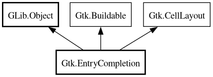

EntryCompletion
Object Hierarchy:

Description:
[
CCode ( type_id =
"gtk_entry_completion_get_type ()" ) ]
public class EntryCompletion :
Object,
Buildable,
CellLayout
Content:
Properties:
Creation methods:
Methods:
Signals:
Inherited Members:
All known members inherited from class GLib.Object
All known members inherited from interface Gtk.Buildable
All known members inherited from interface Gtk.CellLayout